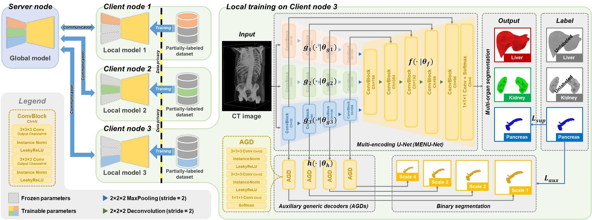
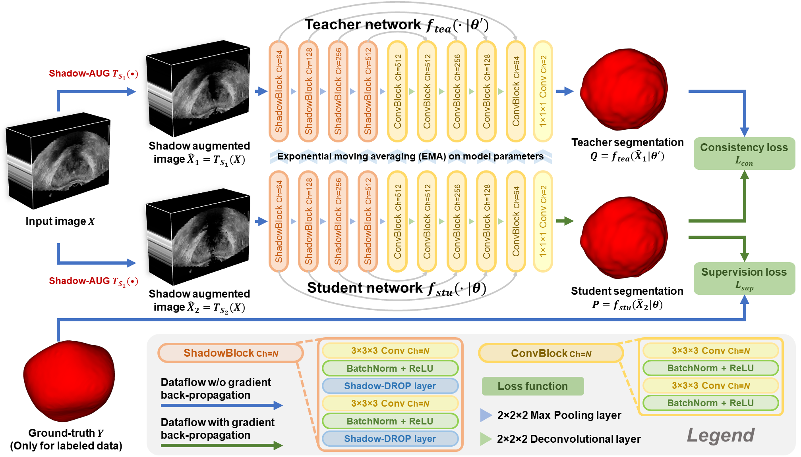
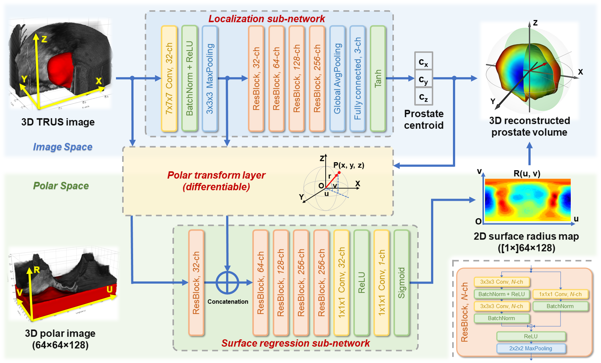
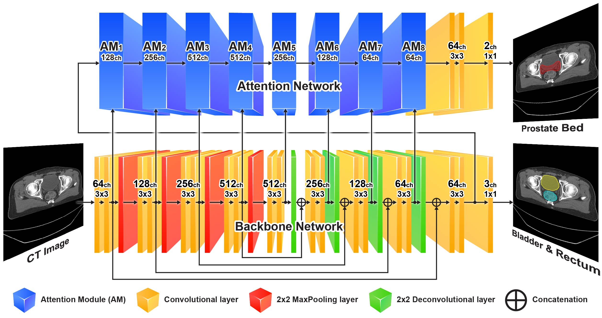
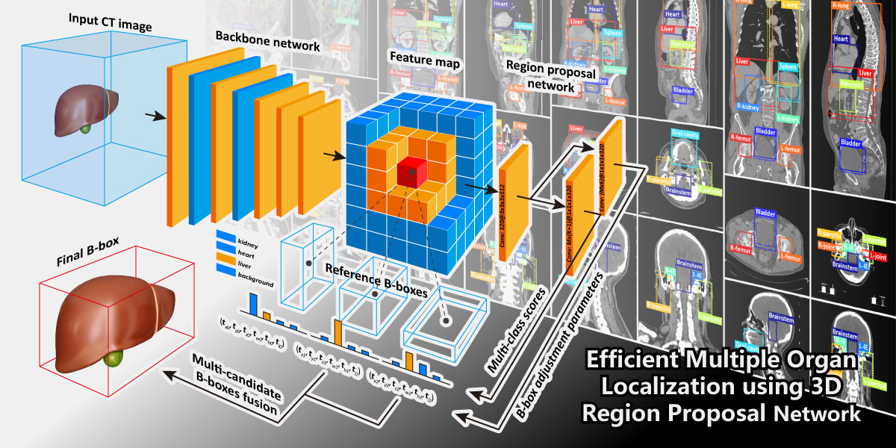

Dr. Xuanang Xu is a postdoc working at the Deep Imaging Analytics Lab (DIAL) (advisor: Prof. Pingkun Yan) at Rensselaer Polytechnic Institute (RPI). Before joining RPI, he was a postdoc working at the IDEA lab (advisor: Prof. Dinggang Shen) at the University of North Carolina (UNC) at Chapel Hill. He obtained his Ph.D. in Pattern Recognition and Intelligent Systems from Beihang University in 2019. His research interest lies in computational biomedical image analysis, especially focusing on medical image segmentation using artificial intelligence and machine learning techniques in a close connection with clinical applications, such as CT image segmentation for radiotherapy planning, ultrasound segmentation for prostate biopsy, and federated learning for data privacy preserving.
Dr. Xuanang Xu is a postdoc working at the Deep Imaging Analytics Lab (DIAL) (advisor: Prof. Pingkun Yan) at Rensselaer Polytechnic Institute (RPI). Before joining RPI, he was a postdoc working at the IDEA lab (advisor: Prof. Dinggang Shen) at the University of North Carolina (UNC) at Chapel Hill. He obtained his Ph.D. in Pattern Recognition and Intelligent Systems from Beihang University in 2019. His research interest lies in computational biomedical image analysis, especially focusing on medical image segmentation using artificial intelligence and machine learning techniques in a close connection with clinical applications, such as CT image segmentation for radiotherapy planning, ultrasound segmentation for prostate biopsy, and federated learning for data privacy preserving.
Education and training
- 09/2020 - Present: Postdoc, Rensselaer Polytechnic Institute, Troy, NY, United States
- 12/2019 - 08/2020: Postdoc, UNC at Chapel Hill, Chapel Hill, NC, United States
- 07/2019 - 11/2019: Visiting student, UNC at Chapel Hill, Chapel Hill, NC, United States
- 09/2012 - 11/2019: Ph.D., Beihang University, Beijing, China
- 09/2008 - 06/2012: B.E., Beihang University, Beijing, China
Teaching
- Programming for Biomedical Engineering -- Undergraduate level -- Fall semester of 2022, 2023
- Biomedical Image Analysis -- Graduate/undergraduate level -- Spring semester of 2023, 2024

X. Xu, H.H. Deng, J. Gateno, and P. Yan
IEEE Transactions on Medical Imaging, 2023

X. Xu, T. Sanford, B. Turkbey, S. Xu, B.J. Wood, and P. Yan
IEEE Transactions on Medical Imaging, 2022

X. Xu, T. Sanford, B. Turkbey, S. Xu, B.J. Wood, and P. Yan
Medical Image Analysis, 2022

X. Xu, C. Lian, S. Wang, T. Zhu, R.C. Chen, A.Z. Wang, T.J. Royce, P. Yap, D. Shen, and J. Lian
Medical Image Analysis, 2021

X. Xu, F. Zhou, B. Liu, D. Fu, and X. Bai
IEEE Transactions on Medical Imaging, 2019 (featured article)
2024
- X. Xu, J. Lee, N. Lampen, D. Kim, T. Kuang, H.H. Deng, M.A.K. Liebschner, J. Gateno, and P. Yan. “DiRecT: Diagnosis and Reconstruction Transformer for Mandibular Deformity Assessment,” in 27th International Conference on Medical Image Computing and Computer Assisted Intervention (MICCAI). Marrakesh, Morocco, Oct. 6-10, 2024. (accepted)
- X. Song, X. Xu, and P. Yan. “DINO-Reg: General Purpose Image Encoder for Training-free Multi-modal Deformable Medical Image Registration,” in 27th International Conference on Medical Image Computing and Computer Assisted Intervention (MICCAI). Marrakesh, Morocco, Oct. 6-10, 2024. (accepted)
- X. Fang, D. Kim, X. Xu, T. Kuang, N. Lampen, J. Lee, H.H. Deng, M.A.K. Liebschner, J.J. Xia, J. Gateno, and P. Yan, “Correspondence attention for facial appearance simulation,” Medical Image Analysis (MedIA), vol. 93, pp. 103094, 2024.
- J. Lee, D. Kim, X. Xu, T. Kuang, J. Gateno, and P. Yan, “Predicting Optimal Patient-Specific Postoperative Facial Landmarks for Patients with Craniomaxillofacial Deformities,” International Journal of Oral & Maxillofacial Surgery, 2024. (in press)
- J. Lee, X. Xu, D. Kim, H.H. Deng, T. Kuang, N. Lampen, X. Fang, J. Gateno, and P. Yan, “Large Language Models Diagnose Facial Deformity,” in Computer Assisted Radiology and Surgery 2024. Barcelona, Spain, Jun. 18–21, 2024. (full paper accepted)
2023
- X. Xu, H.H. Deng, J. Gateno, and P. Yan, “Federated multi-organ segmentation with inconsistent labels,” IEEE Transactions on Medical Imaging (TMI), vol. 42, no. 10, pp. 2948–2960, 2023.
- X. Xu, H.H. Deng, T. Chen, T. Kuang, J.C. Barber, D. Kim, J. Gateno, J.J. Xia, and P. Yan, “Federated cross learning for medical image segmentation,” in Medical Imaging with Deep Learning 2023. Nashville, Tennessee, United States, Jul. 10-12, 2023.
- X. Xu, H.H. Deng, T. Kuang, D. Kim, P. Yan, and J. Gateno, “Machine learning effectively diagnoses mandibular deformity using three-dimensional landmarks,” Journal of Oral and Maxillofacial Surgery, vol. 82, no. 2, pp. 181–190, 2024.
- L. Teng*, B. Wang*, X. Xu*, J. Zhang, L. Mei, Q. Feng, and D. Shen, “Beam-wise dose composition learning for head and neck cancer dose prediction in radiotherapy,” Medical Image Analysis (MedIA), vol. 92, pp. 103045, 2024. (*: Co-first author)
- X. Fang, X. Xu, J.J. Xia, T. Sanford, B. Turkbey, S. Xu, B.J. Wood, and P. Yan, “Shape description losses for medical image segmentation,” Machine Vision and Applications, vol. 34, p. 57, 2023.
- N. Lampen, D. Kim, X. Xu, T. Kuang, X. Fang, J. Lee, H.H. Deng, M.A.K. Liebschner, J.J. Xia, J. Gateno, and P. Yan. “Spatiotemporal Incremental Mechanics Modeling of Facial Tissue Change,” in 26th International Conference on Medical Image Computing and Computer Assisted Intervention (MICCAI). Vancouver, Canada, Oct. 8-12, 2023.
- X. Fang, D. Kim, X. Xu, T. Kuang, N. Lampen, J. Lee, H.H. Deng, J. Gateno, M.A.K. Liebschner, J.J. Xia, and P. Yan. “Soft-tissue Driven Craniomaxillofacial Surgical Planning,” in 26th International Conference on Medical Image Computing and Computer Assisted Intervention (MICCAI). Vancouver, Canada, Oct. 8-12, 2023.
- X. Xu, T. Kuang, A. Chen, N. Lampen, X. Fang, D. Kim, M.A.K. Liebschner, J.J. Xia, J. Gateno, H.H. Deng, and P. Yan, “Mandible landmark detection for craniomaxillofacial surgical planning using graph convolutional network,” in Computer Assisted Radiology and Surgery 2023. Munich, Germany, Jun. 20–23, 2023.
- X. Fang, D. Kim, X. Xu, T. Kuang, N. Lampen, J. Lee, H.H. Deng, J. Gateno, M.A.K. Liebschner, J.J. Xia, and P. Yan, “Deep learning-based soft-tissue-driven craniomaxillofacial surgical planning,” in Computer Assisted Radiology and Surgery 2023. Munich, Germany, Jun. 20–23, 2023.
- J. Lee, D. Kim, X. Xu, X. Fang, T. Kuang, N. Lampen, H.H. Deng, M.A.K. Liebschner, J.J. Xia, J. Gateno, and P. Yan, “A feasibility study on estimating desired postoperative face using deep learning for patients with craniomaxillofacial deformities,” in Computer Assisted Radiology and Surgery 2023. Munich, Germany, Jun. 20–23, 2023.
- N. Lampen, D. Kim, X. Xu, X. Fang, T. Kuang, H.H. Deng, M.A.K. Liebschner, J.J. Xia, J. Gateno, and P. Yan, “Incremental biomechanical deep learning modeling of facial tissue deformation,” in Computer Assisted Radiology and Surgery 2023. Munich, Germany, Jun. 20–23, 2023.
- X. Song, X. Xu, S. Xu, B. Turkbey, B.J. Wood, T. Sanford, and P. Yan, “Distance map supervised landmark localization for MR-TRUS registration,” in SPIE Medical Imaging 2023. San Diego, California, United States, Feb. 19-23, 2023. [Cum Laude poster winner]
2022
- X. Xu, T. Sanford, B. Turkbey, S. Xu, B.J. Wood, and P. Yan, “Shadow-consistent semi-supervised learning for prostate ultrasound segmentation,” IEEE Transactions on Medical Imaging (TMI), vol. 41, no. 6, pp. 1331–1345, 2022.
- X. Xu, T. Sanford, B. Turkbey, S. Xu, B.J. Wood, and P. Yan, “Polar transform network for prostate ultrasound segmentation with uncertainty estimation,” Medical Image Analysis (MedIA), vol. 78, pp. 102418, 2022.
- X. Song, H. Guo, X. Xu, H. Chao, S. Xu, B. Turkbey, B.J. Wood, G. Wang, P. Yan, “Cross-modal attention for MRI and ultrasound volume registration,” Medical Image Analysis (MedIA), vol. 82, pp. 102612, 2022. [Runner-up for Elsevier-MedIA prize]
- F. Wang, X. Xu, D. Yang, R. Chen, T. Royce, A. Wang, J. Lian, and C. Lian, “Dynamic Cross-Task Representation Adaptation for Clinical Targets Co-Segmentation in CT Image-Guided Post-Prostatectomy Radiotherapy,” IEEE Transactions on Medical Imaging (TMI), vol. 42, no. 4, pp. 1046–1055, 2023.
- H. Guo, X. Xu, X. Song, S. Xu, H. Chao, J. Myers, B. Turkbey, P.A. Pinto, B.J. Wood, and P. Yan, “Ultrasound frame-to-volume registration via deep learning for interventional guidance,” IEEE Transactions on Ultrasonics, Ferroelectrics, and Frequency Control, 2022. (early access)
- X. Fang, D. Kim, X. Xu, T. Kuang, H.H. Deng, J.C. Barber, N. Lampen, J. Gateno, J.J. Xia, and P. Yan. “Deep Learning-based Facial Appearance Simulation Driven by Surgically Planned Craniomaxillofacial Bony Movement,” in 25th International Conference on Medical Image Computing and Computer Assisted Intervention (MICCAI). Resorts World Convention Centre, Singapore, Sept. 18-22, 2022. [Young scientist publication award (5 out of 573)]
- B. Wang, L. Teng, L. Mei, Z. Cui, X. Xu, Q. Feng, and D. Shen. “Deep learning-based head and neck radiotherapy planning dose prediction via beam-wise dose decomposition,” in 25th International Conference on Medical Image Computing and Computer Assisted Intervention (MICCAI). Resorts World Convention Centre, Singapore, Sept. 18-22, 2022.
- X. Xu, H.H. Deng, T. Kuang, P. Yan, and J.J. Xia, “Segmentation of bones from head CBCT using federated learning with clinician-in-the-loop,” in Computer Assisted Radiology and Surgery 2022. Tokyo, Japan, Jun. 7-11, 2022.
- N. Lampen, D. Kim, X. Fang, X. Xu, T. Kuang, H.H. Deng, J.C. Barber, J. Gateno, J.J. Xia, and P. Yan, “Deep learning for biomechanical modeling of facial tissue deformation in orthognathic surgical planning,” International Journal of Computer Assisted Radiology and Surgery, vol. 17, no. 5, pp. 945–952, 2022.
- H.H. Deng, Q. Liu, A. Chen, T. Kuang, P. Yuan, J. Gateno, D. Kim, J.C. Barber, K.G. Xiong, P. Yu, K.J. Gu, X. Xu, P. Yan, D. Shen, J.J. Xia. "Clinical Feasibility of Deep Learning-Based Automatic Whole Head CBCT Image Segmentation and Landmark Digitization in Computer-Aided Surgical Simulation for Orthognathic Surgery," International Journal of Oral & Maxillofacial Surgery, 2022. (In press)
- A. Babier, R. Mahmood, ..., X. Xu, et al., “OpenKBP-Opt: an international and reproducible evaluation of 76 knowledge-based planning pipelines,” Physics in Medicine & Biology, vol. 67, no. 18, p. 185012, 2022.
2021
- X. Xu, C. Lian, S. Wang, T. Zhu, R.C. Chen, A.Z. Wang, T.J. Royce, P. Yap, D. Shen, and J. Lian, “Asymmetric multi-task attention network for prostate bed segmentation in computed tomography images,” Medical Image Analysis (MedIA), vol. 72, pp. 102116, 2021.
- X. Xu, C. Lian, P.T. Yap, A.Z. Wang, B.S. Chera, C. Shen, and J. Lian, “Prediction of optimal dosimetry for intensity-modulated radiotherapy with a cascaded auto-content deep learning model,” International Journal of Radiation Oncology, Biology, Physics, vol. 111, no. 3, pp. e113, 2021.
- Y. Zhou, H. Chen, Y. Li, Q. Liu, X. Xu, S. Wang, P. Yap, and D. Shen, “Multi-task learning for segmentation and classification of tumors in 3D automated breast ultrasound images,” Medical Image Analysis (MedIA), vol. 70, pp. 101918, 2021.
- X. Song, H. Guo, X. Xu, H. Chao, S. Xu, B. Turkbey, B.J. Wood, G. Wang, and P. Yan. “Cross-modal Attention for MRI and Ultrasound Volume Registration,” in 24th International Conference on Medical Image Computing and Computer Assisted Intervention (MICCAI). Strasbourg, France, Sept. 27-Oct. 1, 2021. [Nominated for young scientist publication award (10 out of 531)]
- H. Guo, X. Xu, S. Xu, B.J. Wood, and P. Yan. “End-to-end Ultrasound Frame to Volume Registration,” in 24th International Conference on Medical Image Computing and Computer Assisted Intervention (MICCAI). Strasbourg, France, Sept. 27-Oct. 1, 2021.
- J. Zhang, H. Chao, X. Xu, C. Niu, G. Wang, and P. Yan. “Task-Oriented Low-Dose CT Image Denoising,” in 24th International Conference on Medical Image Computing and Computer Assisted Intervention (MICCAI). Strasbourg, France, Sept. 27-Oct. 1, 2021.
2020 and earlier
- X. Xu, C. Lian, S. Wang, A. Wang, T. Royce, R. Chen, J. Lian, and D. Shen, “Asymmetrical multi-task attention U-net for the segmentation of prostate bed in CT image,” in 23rd International Conference on Medical Image Computing and Computer Assisted Intervention (MICCAI). Lima, Peru, Oct. 4-8, 2020.
- X. Xu, F. Zhou, B. Liu, D. Fu, and X. Bai, “Efficient multiple organ localization in CT image using 3D region proposal network,” IEEE Transactions on Medical Imaging (TMI), vol. 38, no. 8, pp. 1885–1898, 2019. [Featured article]
- X. Xu, F. Zhou, B. Liu, and X. Bai, “Multiple organ localization in CT image using triple-branch fully convolutional networks,” IEEE Access, vol. 7, pp. 98083–98093, 2019.
- X. Xu, F. Zhou, and B. Liu, “Automatic bladder segmentation from CT images using deep CNN and 3D fully connected CRF-RNN,” International Journal of Computer Assisted Radiology and Surgery, vol. 13, no. 7, pp. 967–975, 2018.
- B. Liang, Y. Li, R. Wei, B. Guo, X. Xu, B. Liu, J. Li, Q. Wu, and F. Zhou, “A singular value decomposition linear programming (SVDLP) optimization technique for circular cone based robotic radiotherapy,” Physics in Medicine & Biology, vol. 63, no. 1, p. 015034, 2018.
- R. Wei, F. Zhou, B. Liu, B. Liang, B. Guo, and X. Xu. “A CNN based volumetric imaging method with single X-ray projection,” in 2017 IEEE International Conference on Imaging Systems and Techniques (IST). Beijing, China, Oct. 18-20, 2017.
- X. Xu, B. Liu, and F. Zhou, “Hessian-based vessel enhancement combined with directional filter banks and vessel similarity,” in 2013 ICME International Conference on Complex Medical Engineering. Beijing, China, May 25-28, 2013, pp. 80–84.
Associate Editor of
- Medical Physics
- International Journal of Image and Graphics
Co-chair and Organizer of
- 15th Machine Learning in Medical Imaging (MICCAI workshop), 2024
- 14th Machine Learning in Medical Imaging (MICCAI workshop), 2023
- 13th Machine Learning in Medical Imaging (MICCAI workshop), 2022
- 11th Machine Learning in Medical Imaging (MICCAI workshop), 2021
Reviewer of
- IEEE Transactions on Medical Imaging (IEEE TMI) [Gold-level Distinguished Reviewer]
- Medical Image Analysis
- IEEE Journal of Biomedical and Health Informatics (IEEE JBHI)
- Medical Physics [Distinguished Referee]
- Pattern Recognition
- Neurocomputing
- Frontiers in Neurology Applied Neuroimaging
- Frontiers in Neuroinformatics
- International Journal of Oral & Maxillofacial Surgery
- MDPI Journal of Personalized Medicine
- MDPI Journal of Clinical Medicine
- MDPI Electronics
- MDPI Life
- Machine Vision and Applications
- Artificial Intelligence Review
- IEEE Access
- Medical Image Computing and Computer Assisted Intervention (MICCAI), 2021-2024
- Machine Learning in Medical Imaging (MICCAI workshop), 2021-2023
- International Conference of the IEEE Engineering in Medicine & Biology Society (EMBC), 2021-2022
{kind=link}
{kind=link}
{kind=link}
{kind=link}
{kind=link}